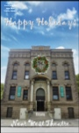
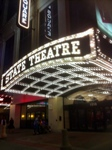
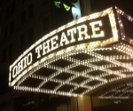
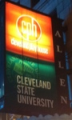

Hanna Theater
Playhouse Square
2067 East 14th Street
Cleveland, Ohio 44115
Phone:216-241-6000
Great Lakes Theater
Lakewood High School was the birthplace of the Great Lakes Theater Festival in 1961. Conceptualized and brought to life by the Lakewood Board of Education. They provided a home to a local Shakespeare to troupe run by Arthur Lithgow a local English professor. When the curtain rose that night in July, 1962 the theater was called The Great Lakes Shakespeare Festival. GLTF originally performed Shakespeare in repertoire and in 1965 expanded its range beyond the Bard. GLTF moved to the Ohio Theater in Playhouse Square on July 9, 1982. It remained at the Ohio Theater until it found its new home in 2008 at their newly renovated Hanna Theater. The Hanna Theater was closed in 1988 and was re-opened in September of 1997. Cleveland Playhouse
Allen Theater Complex
1407 Euclid Avenue
Cleveland, Ohio 44115
Phone:216-241-6000
Cleveland Play House
CHPis one of America's first regional theaters established in 1915. It currently resides at the Allen Theater at Playhouse Square but for many years resided at its facility on Euclid and 77th Street. CHP's early home was built in 1927. The original facility was built on land donated by Francis Drury. The facility expanded in 1983 when Philip Johnson designed an expansion that utilized the old Sears building.  Near West Theater
3606 Bridge Avenue
Cleveland, Ohio 44113
Phone:216-961-6391
Near West Theater
NWTwas established in 1977 when they were awarded a small grant from a Cleveland Community Block Grant. NWT is founded on the belief that theater possesses the power to transform. It's working values include: Love, Inclusion, Integrity, Creativity, Activism and Continuity.  The State Theater
1519 Euclid Avenue
Cleveland, Ohio 44115
Phone:216-771-4444
Playhouse Square Foundation
The State Theater one of the 5 theater complexes within Playhouse Square was opened in 1921. Its original purpose was to feature movies but it was also used for Vaudeville performances. It was designed by architect Thomas W. Lamb. It can seat 3400 people and has a 320 foot lobby said to be the longest in the world. Playhouse Square including the State Theater closed in 1969. It was literally saved from the wrecking ball and was re-opened June, 1984.  Ohio Theater
1511 Euclid Avenue
Cleveland, Ohio 44115
Phone:216-771-4444
Playhouse Square Foundation
The Ohio Theater opened in February, 1921 with the purpose of showcasing legitamite plays. It originally seated 1,338. It had a short lived run as a supper club before closing only to re-open as a movie theater. It survived a fire in 1964 and Playhouse Square including the Ohio Theater closed in 1969 and was literally saved from the wrecking ball. The Ohio Theater was re-opened with 1000 seating capacity in 1982 after its renovation for the Great Lakes Shakespeare Festival. Hanna Theatre
2067 East 14th Street
Cleveland, Ohio 44115
Phone:216-771-4444
Playhouse Square Foundation
The Hanna Theater was originally opened in 1921. It was the dream of Daniel Rhodes Hanna and was designed by architect Charles A. Platt. Daniel Rhodes Hanna was inspired to build the Hanna as a tribute to his father, Marcus Hanna. The Hanna is located on 14th Street totally separate from the other four theaters that are part of Playhouse Square. The Hanna Theatre could seat 1,421 people. The theater closed in 1988. It was re-opened in September, 1997.  Allen Theatre
1407 Euclid Avenue
Cleveland, Ohio 44115
Phone:216-771-4444
Playhouse Square Foundation
The Allen Theatre was opened in April, 1921. The Allen Theater was designed by architect C. Howard Crane. It was originally opened as a movie theater. At the time it was opened it could seat close to 3,000 people. The Allen Theater closed in May of 1968. It has had multiple renovations the most recent in 2012 transformed the space into the new home of the Cleveland Playhouse and Cleveland State. It also is a collaborative space for the Case Western Reserve Universities MFA Acting Program.